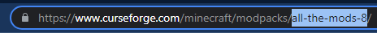
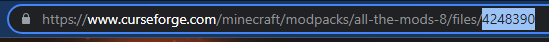
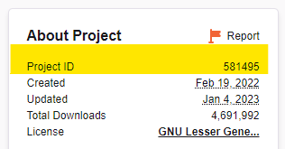

Server Types
Server types
Running a Forge Server
Enable Forge server mode by adding a -e TYPE=FORGE to your command-line.
The overall version is specified by VERSION, as described in the section above and will run the recommended Forge version by default. You can also choose to run a specific Forge version with FORGE_VERSION, such as -e FORGE_VERSION=14.23.5.2854.
docker run -d -v /path/on/host:/data \
-e TYPE=FORGE \
-e VERSION=1.12.2 -e FORGE_VERSION=14.23.5.2854 \
-p 25565:25565 -e EULA=TRUE --name mc itzg/minecraft-server
To use a pre-downloaded Forge installer, place it in the attached /data directory and
specify the name of the installer file with FORGE_INSTALLER, such as:
docker run -d -v /path/on/host:/data ... \
-e FORGE_INSTALLER=forge-1.11.2-13.20.0.2228-installer.jar ...
To download a Forge installer from a custom location, such as your own file repository, specify
the URL with FORGE_INSTALLER_URL, such as:
docker run -d -v /path/on/host:/data ... \
-e FORGE_INSTALLER_URL=http://HOST/forge-1.11.2-13.20.0.2228-installer.jar ...
In both of the cases above, there is no need for the VERSION or FORGEVERSION variables.
Note
If an error occurred while installing Forge, it might be possible to resolve by temporarily setting FORGE_FORCE_REINSTALL to "true". Be sure to remove that variable after successfully starting the server.
Running a Fabric Server
Enable Fabric server mode by adding a -e TYPE=FABRIC to your command-line.
docker run -d -v /path/on/host:/data \
-e TYPE=FABRIC \
-p 25565:25565 -e EULA=TRUE --name mc itzg/minecraft-server
By default, the container will install the latest fabric server launcher, using the latest fabric-loader against the minecraft version you have defined with VERSION (defaulting to the latest vanilla release of the game).
A specific loader or launcher version other than the latest can be requested using FABRIC_LOADER_VERSION and FABRIC_LAUNCHER_VERSION respectively, such as:
docker run -d -v /path/on/host:/data ... \
-e TYPE=FABRIC \
-e FABRIC_LAUNCHER_VERSION=0.10.2 \
-e FABRIC_LOADER_VERSION=0.13.1
Note
If you wish to use an alternative launcher you can:
- Provide the path to a custom launcher jar available to the container with
FABRIC_LAUNCHER, relative to/data(such as-e FABRIC_LAUNCHER=fabric-server-custom.jar) - Provide the URL to a custom launcher jar with
FABRIC_LAUNCHER_URL(such as-e FABRIC_LAUNCHER_URL=http://HOST/fabric-server-custom.jar)
See the Working with mods and plugins section to set up Fabric mods and configuration.
Running a Quilt Server
Enable Quilt server mode by adding a -e TYPE=QUILT to your command-line.
docker run -d -v /path/on/host:/data \
-e TYPE=QUILT \
-p 25565:25565 -e EULA=TRUE --name mc itzg/minecraft-server
By default, the container will install the latest quilt server launcher, using the latest quilt-installer against the minecraft version you have defined with VERSION (defaulting to the latest vanilla release of the game).
A specific loader or installer version other than the latest can be requested using QUILT_LOADER_VERSION and QUILT_INSTALLER_VERSION respectively, such as:
docker run -d -v /path/on/host:/data ... \
-e TYPE=QUILT \
-e QUILT_LOADER_VERSION=0.16.0 \
-e QUILT_INSTALLER_VERSION=0.4.1
Note
If you wish to use an alternative launcher you can:
- Provide the path to a custom launcher jar available to the container with
QUILT_LAUNCHER, relative to/data(such as-e QUILT_LAUNCHER=quilt-server-custom.jar) - Provide the URL to a custom launcher jar with
QUILT_LAUNCHER_URL(such as-e QUILT_LAUNCHER_URL=http://HOST/quilt-server-custom.jar)
See the Working with mods and plugins section to set up Quilt mods and configuration.
Running a Bukkit/Spigot server
Enable Bukkit/Spigot server mode by adding a -e TYPE=BUKKIT or -e TYPE=SPIGOT to your command-line.
docker run -d -v /path/on/host:/data \
-e TYPE=SPIGOT \
-p 25565:25565 -e EULA=TRUE --name mc itzg/minecraft-server
If the downloaded server jar is corrupted, set FORCE_REDOWNLOAD to "true" to force a re-download during next container startup. After successfully re-downloading, you should remove that or set to "false".
If you are hosting your own copy of Bukkit/Spigot you can override the download URLs with:
- -e BUKKIT_DOWNLOAD_URL=
- -e SPIGOT_DOWNLOAD_URL=
You can build spigot from source by adding -e BUILD_FROM_SOURCE=true
Plugins can either be managed within the plugins subdirectory of the data directory or you can also attach a /plugins volume. If you add plugins while the container is running, you'll need to restart it to pick those up.
You can also auto-download plugins using SPIGET_RESOURCES.
Note
Some of the VERSION values are not as intuitive as you would think, so make sure to click into the version entry to find the exact version needed for the download. For example, "1.8" is not sufficient since their download naming expects 1.8-R0.1-SNAPSHOT-latest exactly.
Running a Paper server
Enable Paper server mode by adding a -e TYPE=PAPER to your command-line.
By default, the container will run the latest build of Paper server but you can also choose to run a specific build with -e PAPERBUILD=205.
docker run -d -v /path/on/host:/data \
-e TYPE=PAPER \
-p 25565:25565 -e EULA=TRUE --name mc itzg/minecraft-server
If you are hosting your own copy of Paper you can override the download URL with PAPER_DOWNLOAD_URL=<url>.
If you have attached a host directory to the /data volume, then you can install plugins via the plugins subdirectory. You can also attach a /plugins volume. If you add plugins while the container is running, you'll need to restart it to pick those up.
You can also auto-download plugins using SPIGET_RESOURCES.
Running a Pufferfish server
A Pufferfish server, which is "a highly optimized Paper fork designed for large servers requiring both maximum performance, stability, and "enterprise" features."
-e TYPE=PUFFERFISH
Note
The VERSION variable is used to select branch latest, 1.18, or 1.17. Use PUFFERFISH_BUILD to really select the SERVER VERSION number.
Extra variables:
- PUFFERFISH_BUILD=lastSuccessfulBuild : set a specific Pufferfish build to use. Example: selecting build 47 => 1.18.1, or build 50 => 1.18.2 etc
- FORCE_REDOWNLOAD=false : set to true to force the located server jar to be re-downloaded
- USE_FLARE_FLAGS=false : set to true to add appropriate flags for the built-in Flare profiler
Running a Purpur server
A Purpur server, which is "a drop-in replacement for Paper servers designed for configurability and new, fun, exciting gameplay features."
-e TYPE=PURPUR
Note
The VERSION variable is used to lookup a build of Purpur to download
Extra variables:
- PURPUR_BUILD=LATEST : set a specific Purpur build to use
- FORCE_REDOWNLOAD=false : set to true to force the located server jar to be re-downloaded
- USE_FLARE_FLAGS=false : set to true to add appropriate flags for the built-in Flare profiler
- PURPUR_DOWNLOAD_URL=<url> : set URL to download Purpur from custom URL.
Running a Magma server
A Magma server, which is a combination of Forge and PaperMC, can be used with
-e TYPE=MAGMA
Note
There are limited base versions supported, so you will also need to set VERSION, such as "1.12.2", "1.16.5", etc.
Running a Mohist server
A Mohist server can be used with
-e TYPE=MOHIST
Note
There are limited base versions supported, so you will also need to set VERSION, such as "1.12.2"
By default the latest build will be used; however, a specific build number can be selected by setting MOHIST_BUILD, such as
-e VERSION=1.16.5 -e MOHIST_BUILD=374
Running a Catserver type server
A Catserver type server can be used with
-e TYPE=CATSERVER
NOTE Catserver only provides a single release stream, so
VERSIONis ignored
Running a Loliserver type server
A Loliserver type server can be used with
-e TYPE=LOLISERVER
Note
Loliserver only provides a single release stream, so VERSION is ignored
Disclaimer The retrieval of the serverjar is not bulletproof. It can and probably will change in the future.
Running a Canyon server
Canyon is a fork of CraftBukkit for Minecraft Beta 1.7.3. It includes multiple enhancements whilst also retaining compatibility with old Bukkit plugins and mods as much as possible.
-e VERSION=b1.7.3 -e TYPE=CANYON
Note
Only VERSION=b1.7.3 is supported. Since that version pre-dates the health check mechanism used by this image, that will need to be disabled by setting DISABLE_HEALTHCHECK=true.
By default, the latest build will be used; however, a specific build number can be selected by setting CANYON_BUILD, such as
-e CANYON_BUILD=11
Running a SpongeVanilla server
Enable SpongeVanilla server mode by adding a -e TYPE=SPONGEVANILLA to your command-line.
By default the container will run the latest STABLE version.
If you want to run a specific version, you can add -e SPONGEVERSION=1.11.2-6.1.0-BETA-19 to your command-line.
Beware that current Sponge STABLE versions for Minecraft 1.12 require using the Java 8 tag:
docker run -d -v /path/on/host:/data -e TYPE=SPONGEVANILLA \
-p 25565:25565 -e EULA=TRUE --name mc itzg/minecraft-server:java8-multiarch
You can also choose to use the EXPERIMENTAL branch.
Just change it with SPONGEBRANCH, such as:
Running a Limbo server
A Limbo server can be run by setting TYPE to LIMBO.
Configuration options with defaults:
LIMBO_BUILD=LATEST
The VERSION will be ignored so locate the appropriate value from here to match the version expected by clients.
FORCE_REDOWNLOAD=falseLIMBO_SCHEMA_FILENAME=default.schemLEVEL="Default;${LIMBO_SCHEMA_NAME}"
Note
Instead of using format codes in the MOTD, Limbo requires JSON chat content. If a plain string is provided, which is the default, then it gets converted into the required JSON structure.
Running a Crucible server
A Crucible server can be run by setting TYPE to CRUCIBLE.
Configuration options with defaults:
CRUCIBLE_RELEASE=latest
Crucible is only available for 1.7.10, so be sure to set VERSION=1.7.10.
Running a server with a Feed the Beast modpack
Note
Requires one of the Ubuntu with Hotspot images listed in the Java versions section.
Feed the Beast application modpacks are supported by using -e TYPE=FTBA (note the "A" at the end of the type). This server type will automatically take care of downloading and installing the modpack and appropriate version of Forge, so the VERSION does not need to be specified.
Environment Variables:
FTB_MODPACK_ID: required, the numerical ID of the modpack to install. The ID can be located by finding the modpack and locating the ID in this part of the URL:
FTB_MODPACK_VERSION_ID: optional, the numerical ID of the version to install. If not specified, the latest version will be installed. The "Version ID" can be obtained by hovering over a server file entry and grabbing this ID in the URL.
{kind=link}
Upgrading
If a specific FTB_MODPACK_VERSION_ID was not specified, simply restart the container to pick up the newest modpack version. If using a specific version ID, recreate the container with the new version ID.
Example
The following example runs the latest version of FTB Presents Direwolf20 1.12:
docker run -d --name mc-ftb -e EULA=TRUE \
-e TYPE=FTBA -e FTB_MODPACK_ID=31 \
-p 25565:25565 \
itzg/minecraft-server:java8-multiarch
Note
Normally you will also add -v volume for /data since the mods and config are installed there along with world data.
Running a server with a CurseForge modpack
Auto CurseForge Management
To manage a CurseForge modpack automatically with upgrade support, pinned or latest version tracking, set TYPE to "AUTO_CURSEFORGE". The appropriate mod loader (Forge / Fabric) version will be automatically installed as declared by the modpack. This mode will also take care of cleaning up unused files installed by previous versions of the modpack, but world data is never auto-removed.
Info
A CurseForge API key is required to use this feature. Go to their developer console, generate an API key, and set the environment variable CF_API_KEY.
When entering your API Key in a docker compose file you will need to escape any $ character with a second $.
Example if your key is $11$22$33aaaaaaaaaaaaaaaaaaaaaaaaaa:
If you use docker run you will need to escape the $ with a \.
Example:
You can use a .env file, in the same directory as your docker-compose.yaml, and define your API Key there to remove the need to escape the $ in your API Key. The .env file is loaded automatically by docker compose.
.env
To use with docker run you need to specify the .env file
Note
Be sure to use the appropriate image tag for the Java version compatible with the modpack.
Most modpacks require a good amount of memory, so it best to set MEMORY to at least "4G" since the default is only 1 GB.
Use one of the following to specify the modpack to install:
Pass a page URL to the modpack or a specific file with CF_PAGE_URL such as the modpack page "https://www.curseforge.com/minecraft/modpacks/all-the-mods-8" or a specific file "https://www.curseforge.com/minecraft/modpacks/all-the-mods-8/files/4248390". For example:
Instead of a URL, the modpack slug can be provided as CF_SLUG. The slug is the short identifier visible in the URL after "/modpacks/", such as

For example:
The latest file will be located and used by default, but if a specific version is desired you can use one of the following options. With any of these options do not select a server file -- they lack the required manifest and defeat the ability to consistently automate startup.
- Use
CF_PAGE_URL, but include the full URL to a specific file - Set
CF_FILE_IDto the numerical file ID - Specify a substring to match the desired filename with
CF_FILENAME_MATCHER
The following shows where to get the URL to the specific file and also shows where the file ID is located:

The following examples all refer to version 1.0.7 of ATM8:
Quite often there are mods that need to be excluded, such as ones that did not properly declare as a client mod via the file's game versions. Similarly, there are some mods that are incorrectly tagged as client only. The following describes two options to exclude/include mods:
Global and per modpack exclusions can be declared in a JSON file and referenced with CF_EXCLUDE_INCLUDE_FILE. By default, the file bundled with the image will be used, but can be disabled by setting this to an empty string. The schema of this file is documented here.
Alternatively, they can be excluded by passing a comma or space delimited list of project slugs or IDs via CF_EXCLUDE_MODS. Similarly, there are some mods that are incorrectly tagged as client only. For those, pass the project slugs or IDs via CF_FORCE_INCLUDE_MODS. These lists will be combined with the content of the exclude/include file, if given.
A mod's project ID can be obtained from the right hand side of the project page: 
If needing to iterate on the options above, set CF_FORCE_SYNCHRONIZE to "true" to ensure the exclude/includes are re-evaluated.
NOTE: these options are provided to empower you to get your server up and running quickly. Please help out by reporting an issue with the respective mod project. Ideally mod developers should use correct registrations for one-sided client mods. Understandably, those code changes may be non-trivial, so mod authors can also add "Client" to the game versions when publishing.
Some modpacks come with world/save data via a worlds file and/or the overrides provided with the modpack. Either approach can be selected to set the LEVEL to the resulting saves directory by setting CF_SET_LEVEL_FROM to either:
- WORLD_FILE
- OVERRIDES
Other configuration available:
- CF_PARALLEL_DOWNLOADS (default is 4): specify how many parallel mod downloads to perform
- CF_OVERRIDES_SKIP_EXISTING (default is false): if set, files in the overrides that already exist in the data directory are skipped. NOTE world data is always skipped, if present.
Old approach
Enable this server mode by adding -e TYPE=CURSEFORGE to your command-line,
but note the following additional steps needed...
You need to specify a modpack to run, using the CF_SERVER_MOD environment
variable. A CurseForge server modpack is available together with its respective
client modpack at https://www.curseforge.com/minecraft/modpacks .
Now you can add a -e CF_SERVER_MOD=name_of_modpack.zip to your command-line.
docker run -d -v /path/on/host:/data -e TYPE=CURSEFORGE \
-e CF_SERVER_MOD=SkyFactory_4_Server_4.1.0.zip \
-p 25565:25565 -e EULA=TRUE --name mc itzg/minecraft-server
If you want to keep the pre-download modpacks separate from your data directory,
then you can attach another volume at a path of your choosing and reference that.
The following example uses /modpacks as the container path as the pre-download area:
docker run -d -v /path/on/host:/data -v /path/to/modpacks:/modpacks \
-e TYPE=CURSEFORGE \
-e CF_SERVER_MOD=/modpacks/SkyFactory_4_Server_4.1.0.zip \
-p 25565:25565 -e EULA=TRUE --name mc itzg/minecraft-server
Modpack data directory
By default, CurseForge modpacks are expanded into the sub-directory /data/FeedTheBeast and executed from there. (The default location was chosen for legacy reasons, when Curse and FTB were maintained together.)
The directory can be changed by setting CF_BASE_DIR, such as -e CF_BASE_DIR=/data.
Buggy start scripts
Some modpacks have buggy or overly complex start scripts. You can avoid using the bundled start script and use this image's standard server-starting logic by adding -e USE_MODPACK_START_SCRIPT=false.
Fixing "unable to launch forgemodloader"
If your server's modpack fails to load with an error like this:
unable to launch forgemodloader
then you apply a workaround by adding this to the run invocation:
-e FTB_LEGACYJAVAFIXER=true